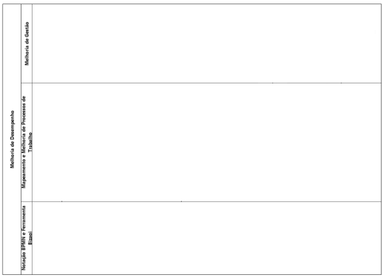
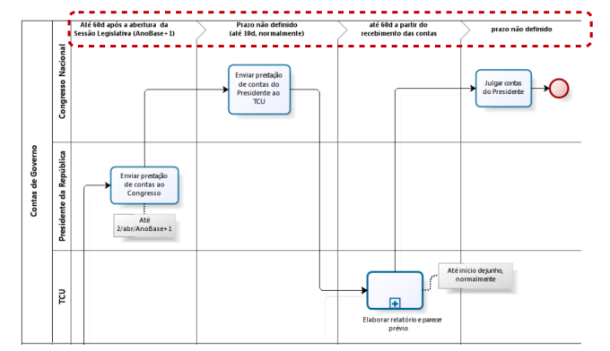
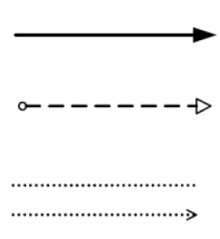
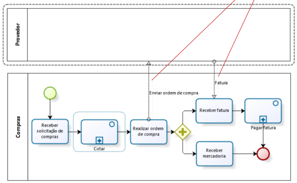
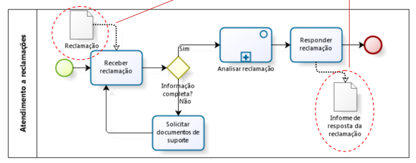
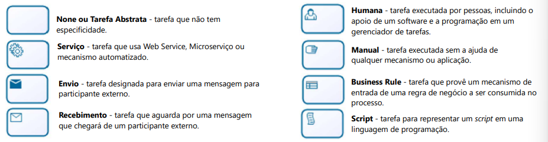
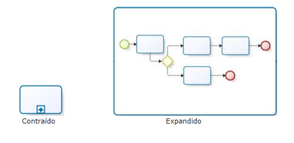
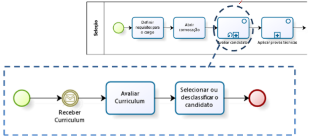
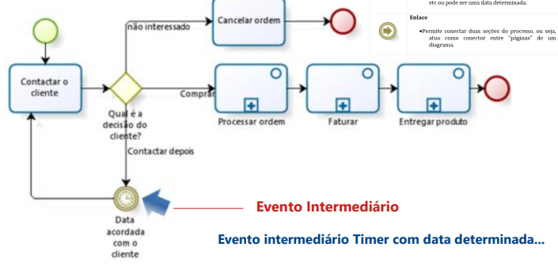
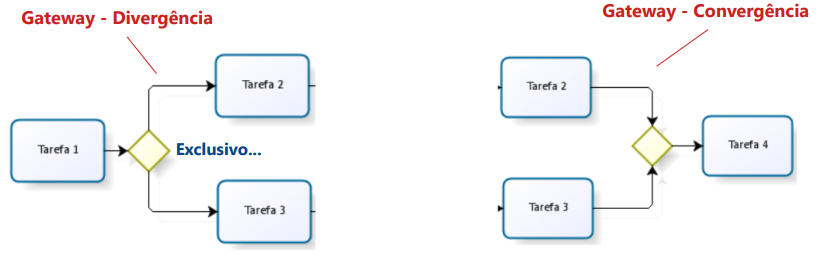

BPMN
Considerações Iniciais
Notação padronizada para diagramação de fluxos chamada Business Process Management Group (OMG). Sendo uma Notação de Gereciamento de Processos de Negócio.
- Business Process Management Notation (BPMN)
Notação BPMN
Principais Abstrações
- PISCINA/POOL
- RAIA/LANE
- FASE/MILESTONE
- CONECTORES
- ATIVIDADES
- SUB-PROCESSOS
- CALL ACTIVITY / REUTILIZÁVEL
- EVENTOS
- GATEWAYS
- ITEMS E DADOS
Piscina / Pool
Container que representa graficamente um participante em um processo.
- Comumente, um dado processo de negócio está contido em uma única piscina

Raia / Lane
Sub-partição de um processo. BPMN não especifica exatamente o uso de raias.
- Comumente, utilizada para organizar e categorizar atividades dentro do mesmo.

Fase / Milestone
É uma subdivisão de uma pool.
- Normalmente, representando uma fase do processo ou um período de tempo determinado...

Conectores
Elementos utilizados para mostrar a ordem de sequenciamento das atividades e dos eventos que ocorrem em um fluxo de trabalho.
- Cada conector tem apenas uma fonte e um alvo.
- Podem ser utilizados para definir o caminho principal de execução de um processo.
- Temos 3 tipos de conectores:
- Fluxo de sequência
- Fluxo de mensagem
- Associação

Exemplos de aplicação dos CONECTORES:



Atividades
Representam pontos de processo, nos quais algum trabalho é realizado.
- Possuem vários tipos de atividaes, mas geralemente é utilizado o NONE.

Sub-processos
É uma "atividade" que tem em seu interior a modelagem de outras ativdiades.
- Um dos tipos de sub-processos mais comum é o Embutido. Sendo um sub-processo em visão contraída.

- Sub-Processo com ciclo: Muito utilizado

Call Activity / Reutilizável
Pode ser entendido como um sub-processo, mas que não tem dependência com o processo pai.
- É uma referência a um Subprocesso ou atividade definida globalmente e reutilziada no processo atual.

Eventos
É um sub-processo especializado, sendo que esse não parte de um fluxo normal do processo pai. além de nao ter entradas nem saídas do fluxo de trabalho.

Gateways
Utilizados para controlar como o fluxo de sequência seguirá seu caminho (convergência ou divergências)
- Só é necessário, caso haja necessidade de controlar o fluxo.
- Atua como mecanismo de porta, permitindo ou não a passagem do TOKEN por um determinado caminho.

Itens e Dados
Utilizados para representar informações e itens físicos, e até armazenagem.